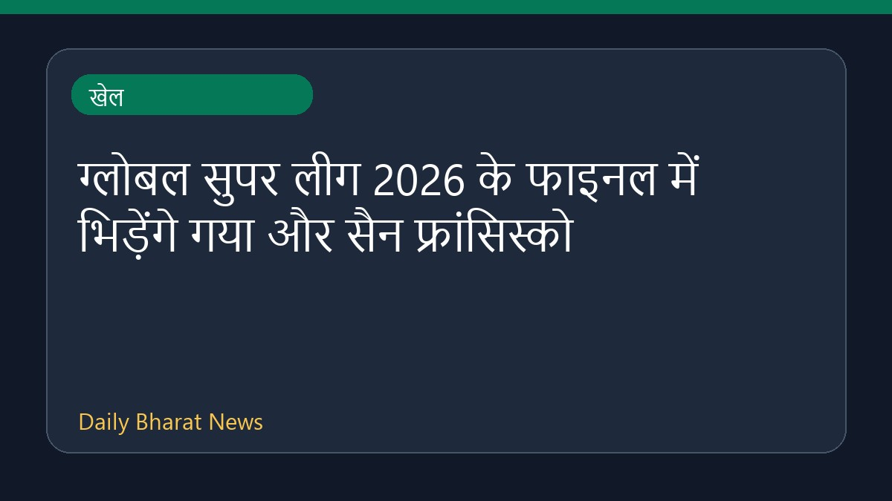

ग्लोबल सुपर लीग 2026 के फाइनल में भिड़ेंगे गया और सैन फ्रांसिस्को

ग्लोबल सुपर लीग 2026 का फाइनल मुकाबला गया अमेजन वारियर्स और सैन फ्रांसिस्को यूनिकॉर्न्स के बीच खेला जाएगा। सैन फ्रांसिस्को ने डेजर्ट वाइपर्स को हराकर फाइनल में अपनी जगह पक्की की है। इस मुकाबले की लाइव स्ट्रीमिंग, स्कोर और अन्य अपडेट्स के संबंध में विभिन्न खेल मंचों पर जानकारी उपलब्ध कराई गई है। क्रिकेट प्रेमी इस रोमांचक खिताबी मुकाबले के प्रसारण और लाइव स्कोर से जुड़ी सभी जरूरी जानकारियाँ क्रिकबज और अन्य खेल वेबसाइटों के माध्यम से प्राप्त कर सकते हैं।